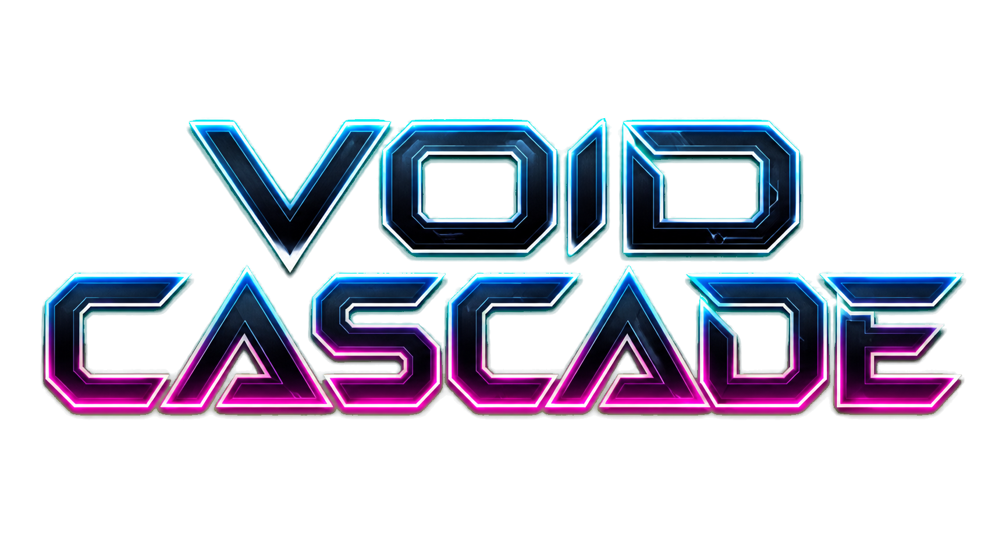
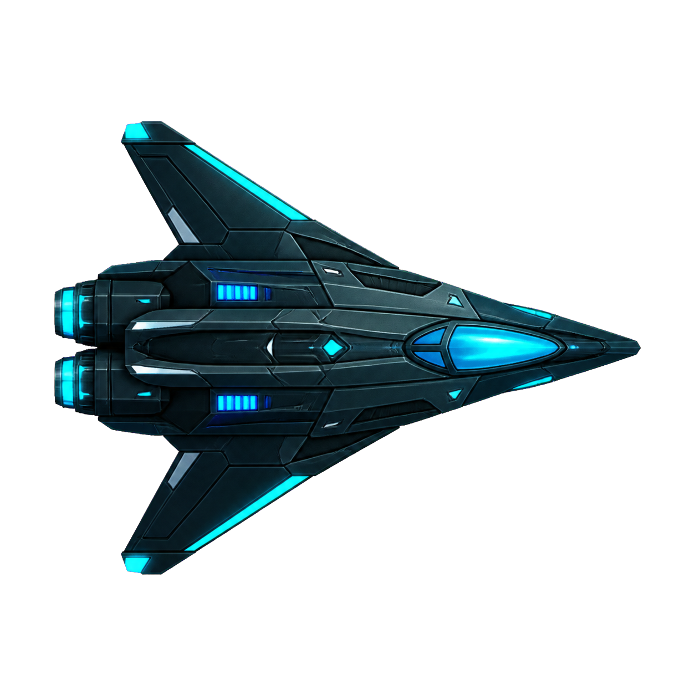

SHATTER THE VOID
TOP PILOTS
PLAY
HIGH SCORES
CONTROLS
KID MODE (easier)
CLICK OR PRESS ANY KEY FOR SOUND
ESC / START to pause • Gamepad supported
HIGH SCORES
BACK
CONTROLS
Click a key to rebind it • B toggles bloom • M toggles sound • Gamepad supported
RESET TO DEFAULTS
BACK
PAUSED
RESUME
QUIT TO MENU
CASCADE COMPLETE
0
SAVE
TRY AGAIN
MAIN MENU
WAVE 1 CLEAR
BONUS +0
0
WAVE 1

TORPEDO
SHIELD